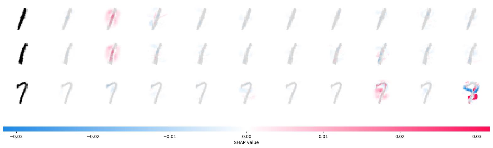

PyTorch Deep Explainer MNIST example
A simple example showing how to explain an MNIST CNN trained using PyTorch with Deep Explainer.
[1]:
import numpy as np
import torch
from torch import nn, optim
from torch.nn import functional as F
from torchvision import datasets, transforms
import shap
[2]:
batch_size = 128
num_epochs = 2
device = torch.device("cpu")
class Net(nn.Module):
def __init__(self):
super().__init__()
self.conv_layers = nn.Sequential(
nn.Conv2d(1, 10, kernel_size=5),
nn.MaxPool2d(2),
nn.ReLU(),
nn.Conv2d(10, 20, kernel_size=5),
nn.Dropout(),
nn.MaxPool2d(2),
nn.ReLU(),
)
self.fc_layers = nn.Sequential(
nn.Linear(320, 50),
nn.ReLU(),
nn.Dropout(),
nn.Linear(50, 10),
nn.Softmax(dim=1),
)
def forward(self, x):
x = self.conv_layers(x)
x = x.view(-1, 320)
x = self.fc_layers(x)
return x
def train(model, device, train_loader, optimizer, epoch):
model.train()
for batch_idx, (data, target) in enumerate(train_loader):
data, target = data.to(device), target.to(device)
optimizer.zero_grad()
output = model(data)
loss = F.nll_loss(output.log(), target)
loss.backward()
optimizer.step()
if batch_idx % 100 == 0:
print(
f"Train Epoch: {epoch} [{batch_idx * len(data)}/{len(train_loader.dataset)}"
f" ({100.0 * batch_idx / len(train_loader):.0f}%)]"
f"\tLoss: {loss.item():.6f}"
)
def test(model, device, test_loader):
model.eval()
test_loss = 0
correct = 0
with torch.no_grad():
for data, target in test_loader:
data, target = data.to(device), target.to(device)
output = model(data)
test_loss += F.nll_loss(output.log(), target).item() # sum up batch loss
pred = output.max(1, keepdim=True)[1] # get the index of the max log-probability
correct += pred.eq(target.view_as(pred)).sum().item()
test_loss /= len(test_loader.dataset)
print(
f"\nTest set: Average loss: {test_loss:.4f},"
f" Accuracy: {correct}/{len(test_loader.dataset)}"
f" ({100.0 * correct / len(test_loader.dataset):.0f}%)\n"
)
train_loader = torch.utils.data.DataLoader(
datasets.MNIST(
"mnist_data",
train=True,
download=True,
transform=transforms.Compose([transforms.ToTensor()]),
),
batch_size=batch_size,
shuffle=True,
)
test_loader = torch.utils.data.DataLoader(
datasets.MNIST("mnist_data", train=False, transform=transforms.Compose([transforms.ToTensor()])),
batch_size=batch_size,
shuffle=True,
)
model = Net().to(device)
optimizer = optim.SGD(model.parameters(), lr=0.01, momentum=0.5)
for epoch in range(1, num_epochs + 1):
train(model, device, train_loader, optimizer, epoch)
test(model, device, test_loader)
Train Epoch: 1 [0/60000 (0%)] Loss: 2.311112
Train Epoch: 1 [12800/60000 (21%)] Loss: 2.219999
Train Epoch: 1 [25600/60000 (43%)] Loss: 1.546236
Train Epoch: 1 [38400/60000 (64%)] Loss: 0.834946
Train Epoch: 1 [51200/60000 (85%)] Loss: 0.731919
Test set: Average loss: 0.0046, Accuracy: 9006/10000 (90%)
Train Epoch: 2 [0/60000 (0%)] Loss: 0.725186
Train Epoch: 2 [12800/60000 (21%)] Loss: 0.456231
Train Epoch: 2 [25600/60000 (43%)] Loss: 0.522802
Train Epoch: 2 [38400/60000 (64%)] Loss: 0.553828
Train Epoch: 2 [51200/60000 (85%)] Loss: 0.332361
Test set: Average loss: 0.0026, Accuracy: 9377/10000 (94%)
[3]:
# since shuffle=True, this is a random sample of test data
batch = next(iter(test_loader))
images, _ = batch
background = images[:100]
test_images = images[100:103]
e = shap.DeepExplainer(model, background)
shap_values = e.shap_values(test_images)
2024-05-16 23:59:57.692986: I tensorflow/core/platform/cpu_feature_guard.cc:210] This TensorFlow binary is optimized to use available CPU instructions in performance-critical operations.
To enable the following instructions: AVX2 FMA, in other operations, rebuild TensorFlow with the appropriate compiler flags.
2024-05-16 23:59:58.335002: W tensorflow/compiler/tf2tensorrt/utils/py_utils.cc:38] TF-TRT Warning: Could not find TensorRT
[4]:
shap_numpy = list(np.transpose(shap_values, (4, 0, 2, 3, 1)))
test_numpy = np.swapaxes(np.swapaxes(test_images.numpy(), 1, -1), 1, 2)
[5]:
# plot the feature attributions
shap.image_plot(shap_numpy, -test_numpy)

The plot above shows the explanations for each class on four predictions. Note that the explanations are ordered for the classes 0-9 going left to right along the rows.